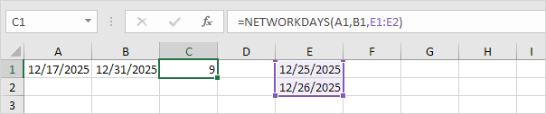
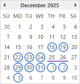

Weekdays
WEEKDAY | NETWORKDAYS | WORKDAY | NETWORKDAYS.INTL | Fill Weekdays | WORKDAY.INTL | Highlight Weekdays
Use WEEKDAY, NETWORKDAYS and WORKDAY to create cool weekday formulas in Excel. Are you ready to improve your Excel skills?
WEEKDAY
The WEEKDAY function in Excel returns a number from 1 (Sunday) to 7 (Saturday) representing the day of the week of a date.
1. The WEEKDAY function below returns 2. 12/22/2025 falls on a Monday.

2. You can also use the TEXT function to display the day of the week.
3. Or create a custom date format (dddd) to display the day of the week. Cell A1 still contains a date.
NETWORKDAYS
The NETWORKDAYS function in Excel returns the number of workdays between two dates. NETWORKDAYS excludes weekends (Saturday and Sunday).
1. The NETWORKDAYS function below returns 11. There are 11 workdays between 12/17/2025 and 12/31/2025.
Explanation: the NETWORKDAYS function includes the start date and the end date. The calendar below helps you understand this formula. Simply count the number of circles.
2. If you supply a list of holidays, the NETWORKDAYS function also excludes holidays.

Explanation: simply count the number of circles in the calendar below.
WORKDAY
The WORKDAY function in Excel returns the date before or after a specified number of workdays. WORKDAY excludes weekends (Saturday and Sunday).
1. The WORKDAY function below returns the date 1/1/2026.

Explanation: the WORKDAY function does not include the start date. The calendar below helps you understand this formula. There are 11 circles.
2. If you supply a list of holidays, the WORKDAY function also excludes holidays.
Explanation: there are 11 circles in the calendar shown below.

NETWORKDAYS.INTL
Use NETWORKDAYS.INTL instead of NETWORKDAYS to specify different weekend days. Use a string of 0's and 1's (third argument) to specify which days are weekend days.
1. The NETWORKDAYS.INTL function below returns 8.
Explanation: the first 0 tells Excel that Monday is not a weekend day. The second 0 tells Excel that Tuesday is not a weekend day, etc. In this example, Friday, Saturday and Sunday are weekend days. The calendar below helps you understand this formula.
Fill Weekdays
To quickly create a list of dates excluding Saturdays and Sundays, execute the following steps.
1. For example, enter the date 12/17/2025 into cell A1.
2. Select cell A1 and drag the fill handle down. AutoFill automatically fills in the days.
3. Instead of filling in days, use the AutoFill options to fill in weekdays (ignoring weekend days).
Note: use WORKDAY.INTL to exclude different weekend days and holidays. Read on.
WORKDAY.INTL
Use WORKDAY.INTL instead of WORKDAY to specify different weekend days. Let's create a list of dates excluding Mondays, Sundays and holidays.
1. Enter the date 12/17/2025 into cell A1 and specify a list of holidays (E1:E2).
2. Enter the WORKDAY.INTL function shown below.
Explanation: use a string of 0's and 1's (third argument) to specify which days are weekend days. The first 1 tells Excel that Monday is a weekend day. The second 0 tells Excel that Tuesday is not a weekend day, etc. In this example, Monday and Sunday are weekend days.
3. Select cell A2 and drag the fill handle down.
Explanation: the calendar below helps you understand this formula.
Conclusion: this formula automatically skips Mondays, Sundays and holidays. Pretty cool.
Highlight Weekdays
You can use conditional formatting in Excel to highlight dates that are weekdays (Monday, Tuesday, Wednesday, Thursday or Friday).
1. For example, select the range A1:A8.
2. On the Home tab, in the Styles group, click Conditional Formatting.

3. Click New Rule.
4. Select 'Use a formula to determine which cells to format'.
5. Enter the formula =AND(WEEKDAY(A1)>1,WEEKDAY(A1)<7)
6. Select a formatting style and click OK.
Result. Excel highlights all weekdays.
Explanation: always write the formula for the upper-left cell in the selected range. Excel copies the formula to the other cells. Use the formula =OR(WEEKDAY(A1)=1,WEEKDAY(A1)=7) to highlight weekend dates.